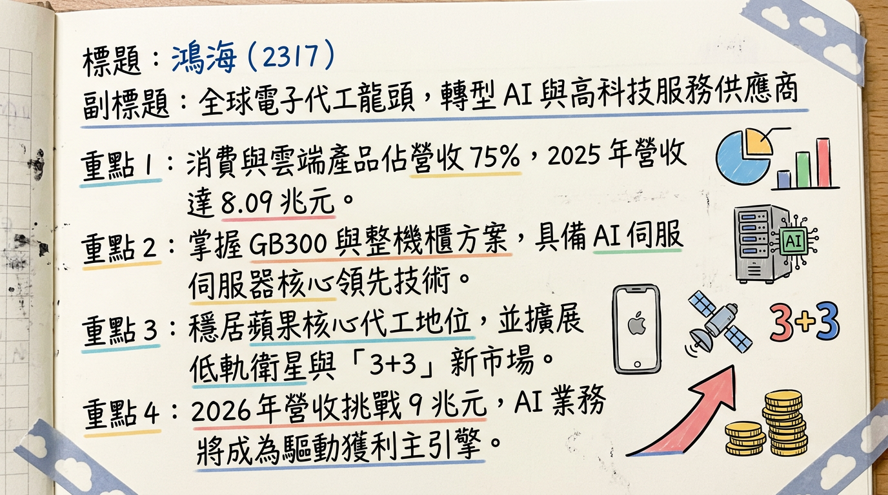
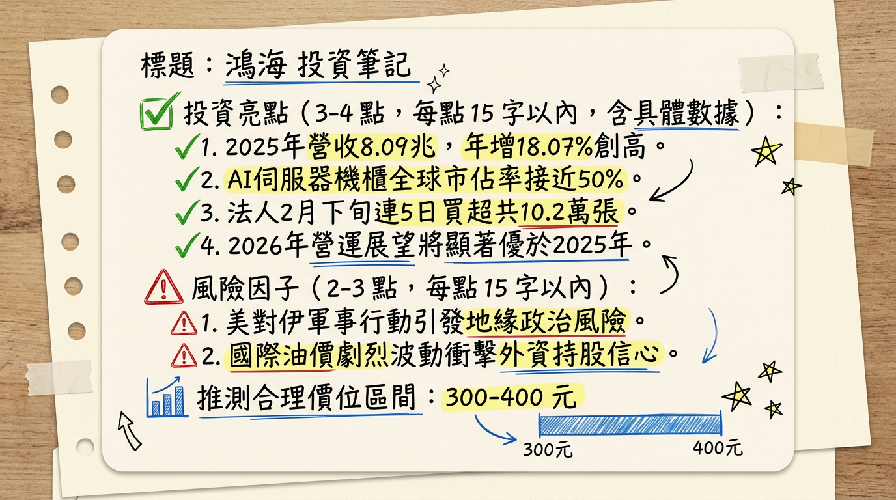

2317 鴻海 深度研究報告
一句話摘要
鴻海（2317）正從全球 EMS 龍頭轉型為「AI 高科技服務商」，憑藉超過 40% 的 AI 伺服器市佔率及 Vera Rubin 平台的 NPI 領先優勢，2026 年營收挑戰 10 兆元大關。
公司概覽
鴻海精密是全球最大的電子代工服務（EMS）大廠，正處於「3+3」轉型關鍵期。2025 年全年營收達 8.09 兆元新台幣，創歷史新高。
營收結構分析（2025-2026 預估數據）
| 產品類別 | 營收佔比 | 核心內容與驅動因素 |
|---|---|---|
| 消費智能產品 | 40-45% | iPhone 系列組裝、遊戲機、平板電腦（受 AI 稀釋比重）。 |
| 雲端網路產品 | 30-35% | 成長最快。AI 伺服器（GB200/GB300/Vera Rubin）、交換機。 |
| 電腦終端產品 | 15-18% | MacBook、iPad、Mac Mini（德州廠生產）。 |
| 元件及其他 | 5-10% | 連接器、半導體封測、車用電子元件、EV 設計（CDMS）。 |
核心競爭優勢
財務分析
近 6 個月營收趨勢表
| 月份 | 營收金額 (新台幣) | 月增率 (MoM) | 年增率 (YoY) |
|---|---|---|---|
| 2026/01 | 7,300.39 億元 | -15.39% | +35.53% |
| 2025/12 | 8,628.61 億元 | +2.20% | +31.77% |
| 2025/11 | 8,442.76 億元 | -5.74% | +25.53% |
| 2025/10 | 8,957.08 億元 | +7.01% | +11.29% |
| 2025/09 | 8,370.68 億元 | +38.01% | +14.19% |
| 2025/08 | 6,065.12 億元 | -1.20% | +10.61% |
年度 EPS 與趨勢
- 2024 實際： 11.01 元。
- 2025 預估： 14.37 - 14.61 元（2025 前三季累計已達 10.38 元）。
- 2026 預估： 18.9 - 22.5 元（高盛最樂觀預估為 19.06 元）。
法說會重點（2025/11 & 2026/02 綜整）
券商觀點
| 券商名稱 | 報告日期 | 評等 | 目標價 | 2026 EPS 預估 |
|---|---|---|---|---|
| 摩根士丹利 | 2026/01/06 | 增持 | 444 元 | 15.85 元 |
| 高盛 (Goldman) | 2026/02/26 | 買進 (確信) | 400 元 | 19.06 元 |
| 本土金控投顧 | 2026/01/10 | 買進 | 278 元 | 16.96 元 |
| FactSet 綜合 | 2025/11/12 | ⚠️過時 | 245 元 | 16.97 元 |
財報深度分析
利潤率趨勢表格（近四季）
| 指標 | 2025 Q3 | 2025 Q2 | 2025 Q1 | 2024 Q4 |
|---|---|---|---|---|
| 毛利率 | 6.35% | 6.33% | 6.11% | 6.15% |
| 營業利益率 | 3.43% | 3.16% | 2.83% | 3.03% |
| 稅後淨利率 | 2.80% | 2.47% | 2.56% | 2.17% |
- 存貨分析： 2025 Q3 存貨週轉天數上升至 49.51 天，主要為預先備料高價值的 GB200/GB300 AI 伺服器組件，屬健康堆積。
- 資本支出： 2025 年預計突破 1,600 億元，重點投入美、墨、印三地產能。
股權異動與資本結構
產業分析
全球 EMS/ODM 競爭格局 (2025 數據)
| 公司名稱 | 2025 營收 (估計) | 全球市佔/地位 | 2026 核心動能 |
|---|---|---|---|
| 鴻海 (2317) | 2,610 億美元 | 龍頭 (>50% AI 機櫃) | Vera Rubin NPI、iPhone 17 |
| 緯創 (3231) | 706 億美元 | 第二 (含緯穎營收) | GPU 基板、ASIC 伺服器 |
| 廣達 (2382) | 682 億美元 | 第三 (CSP 領域強) | Google/Amazon 機櫃 |
| 立訊精密 | 400 億美元 | 第四 (紅供威脅) | iPhone 組裝、車用併購 |
近期催化劑
- 🚀 利多： 2026/03/16 前進 Nvidia GTC 大會，展示 Vera Rubin 超級電腦方案。
- 🚀 利多： 2026/03/16 法說會，預期公佈強勁展望與 7 元以上高股息。
- 🚀 利多： 受惠 Meta 與 Google ASIC 訂單，AI 產品組合毛利改善。
- ⚠️ 利空： 2026/03 地緣政治風險引發外資調節壓力。
- ⚠️ 利空： GB300 系列初期出貨良率波動，短線營收認列可能受阻。
⭐ 成長動能時間軸
| 時間點 | 事件 | 具體影響 |
|---|---|---|
| 2026/01 | 德州廠產能上線 | 兩座新廠（60萬平方英呎）全面投入 Mac Mini 及 AI 模組生產。 |
| 2026/03 | Nvidia GTC 大會 | 展示 Vera Rubin 整機櫃方案，鞏固 NPI 領先地位。 |
| 2026 Q2 | 三菱 EV 量產觀察 | 與 MFTBC 研發之零排放巴士與電動車代工進入關鍵期。 |
| 2026 H2 | Vera Rubin 量產 | 2026 全球 AI 機櫃預計成長至 6.5-8 萬櫃，鴻海為主要受惠者。 |
| 2026 Q3 | iPhone 17 旺季 | AI 手機換機潮帶動消費智能部門營收成長。 |
| 2026 年底 | 墨西哥廠全量產 | 瓜達拉哈拉廠 4 億美元投資案產能全面釋放。 |
2026 展望
- 成長動能：
2. 垂直整合溢價： 液冷技術與機殼自製提升毛利率至 6.5% 以上。
- 風險因子：
2. 競爭加劇： 廣達與緯創在 GB300 世代的市佔追趕。
投資結論
本報告由 AI 自動產生，資料來源為公開網路資訊，僅供參考，不構成投資建議。產生時間：2026-03-02 06:19
📊 資訊卡


